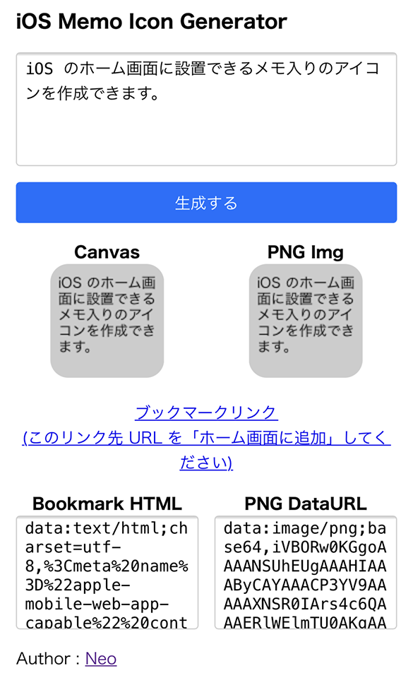
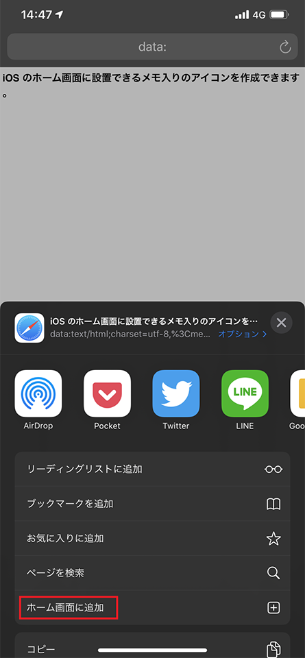

iOS のホーム画面にメモ付きのアイコンを置ける「iOS Memo Icon Generator」を作った
「ショートカットメモ帳」というアプリがあり、このアプリの仕組みを見て似たようなモノを作った。
このアプリは、iOS の「ホーム画面に追加」機能と、DataURL の仕組みを利用して、「オリジナルのメモが書かれたアイコン」を生成し、ホーム画面に配置できるようになっている。アイコンをタップするとアプリが起動し、アイコン作成時に入力したメモの詳細画面に飛べるというモノ。
実装も調べられたので、コレならアプリの体裁を取らずに、HTML ファイル1つでジェネレーターを作れそうだなと思い、作ってみたのが、以下の「iOS Memo Icon Generator」。
上のページに iOS Safari でアクセスする。
テキストエリアに任意のテキストを入力して「生成する」ボタンを押すと、下にアイコンのプレビューが表示されるので、見栄えを確認し、「ブックマークリンク」を押下する。

すると、入力したメモが記されたページが開くので、この画面で「ホーム画面に追加」メニューを選択する。


すると、自分で作成したアイコンがホーム画面に表示される。
ホーム画面のアイコンをタップすると、入力したメモのテキストが表示される、というモノ。
実装解説
実装を概説すると次のとおり。
- Canvas の
toDataURL()メソッドを使って PNG 画像の DataURL を生成する - この DataURL 文字列を
link要素に仕込み、iOS 用の Favicon として表示できるような HTML 文字列を作る - その HTML 文字列を DataURL 形式に変換し、ブラウザの URL 欄に入力することで、「HTML ファイルが存在しない HTML ページ」をブラウザに表示したり、「ホーム画面に追加」したりできるようにした
一つずつ、もう少し詳しく解説していこう。
canvas 要素の利用
まず、ホーム画面に表示するアイコン自体をどう作るかというと、canvas 要素を利用する。大体 114×114px とか、152×152px とかのアイコンを作っておけば、iOS のホーム画面向けのアイコンとなる。
canvas 要素に上手いことテキストを入れていくところを、結構こだわった。通常、canvas.getContext('2d').fillText() メソッドで Canvas に文字を入れていくと、Canvas の幅に合わせた「折り返し」などが行われない。そこで、折り返しや省略表示を行うよう独自のメソッドを作成した。以下の記事を参考に改変したモノ。
/**
* canvas 要素に文字列を折り返しながら描画する
*
* - 参考 : https://www.html5canvastutorials.com/tutorials/html5-canvas-wrap-text-tutorial/
*
* @param {CanvasRenderingContext2D} context canvas 要素の Context
* @param {string} inputText 入力値
* @param {number} x 文字列を描画し始める X 座標値
* @param {number} y 文字列を描画し始める Y 座標値。改行の度に本引数の値を更新する
* @param {number} maxWidth 文字列の描画範囲となる最大幅
* @param {number} maxHeight 文字列の描画範囲となる最大の高さ
* @param {number} lineHeight 行の高さ
*/
function fillWrappedText(context, inputText, x, y, maxWidth, maxHeight, lineHeight) {
const characters = inputText.split('');
let lineText = '';
for(let i = 0; i < characters.length; i++) {
// 折り返した後の座標が描画可能範囲を超える場合は中止する
if(y > maxHeight) {
break;
}
// 改行コードの場合
if(characters[i] === '\n') {
// 現在行を出力する
context.fillText(lineText, x, y, maxWidth);
// 次の行の準備をし次のループに繋ぐ
y += lineHeight;
lineText = '';
continue;
}
const testLineText = lineText + characters[i];
const testWidth = context.measureText(testLineText).width;
if(testWidth > maxWidth && i > 0) {
// 現在行を出力する
context.fillText(lineText, x, y, maxWidth);
// 次の行の準備をする
y += lineHeight;
lineText = characters[i];
}
else {
// 現在行に1文字追加する
lineText = testLineText;
}
}
// Y 座標が描画可能範囲を超えない場合のみ最終行を書き込む
if(y <= maxHeight) {
context.fillText(lineText, x, y, maxWidth);
}
}
Canvas を PNG 形式に変換するため、canvas.toDataURL('image/png') メソッドを使用し、PNG 画像の DataURL 文字列を取得している (data:image/png;base64, から始まる文字列)。
HTML の DataURL 文字列を作成する
次に、「HTML ページを DataURL 形式で表現した文字列」を作る。HTML 中に
<link rel="apple-touch-icon-precomposed" href="【PNG 画像】">
という link 要素を仕込んでおくことで、「ホーム画面に追加」で Web ページをホーム画面に配置した時専用のアイコンを用意できる。
通常は href 属性値にファイルパスを渡すワケだが、今回は先程生成した PNG 画像の DataURL 文字列をココに埋め込んでしまう。
<link rel="apple-touch-icon-precomposed" href="data:image/png;base64,【… Base64 文字列】">
当然、Base64 文字列は結構長くなるので、HTML 全体はなるべく短くしたい。省略できる要素は省略していく。
ホーム画面でアイコンをタップして、何も表示されないのも味気ないので、入力したメモを全文表示できるようにしてみた。最終的に次のような DataURL 文字列が作れれば OK。
data:text/html;charset=utf-8,
<meta name="apple-mobile-web-app-capable" content="yes">
<link rel="apple-touch-icon-precomposed" href="【PNG 画像の DataURL 文字列】">
<title>【任意テキスト (ホーム画面にアプリ名として表示される)】</title>
<h1 style="font-family:sans-serif;word-break:break-all">【任意テキスト】</h1>
適宜 encodeURIComponent() を利用してパーセント・エンコーディングしておく。その値を「ブックマークリンク」の a 要素の href 属性値にそのままブチ込めば、DataURL 文字列をそのまま Safari ブラウザで表示してくれる。
後は「ホーム画面に追加」を選んでもらうことで、アイコンをホーム画面に追加できるようになる。
サーバレス
アイコンを生成するための、単一の HTML ファイル内に、全ての必要な JavaScript コードを埋め込んだので、
- https://neos21.github.io/ios-memo-icon-generator/index.html (実際に稼動している Web ページ)
- https://github.com/Neos21/ios-memo-icon-generator/blob/master/index.html (その実装)
この index.html さえ適当な所に配置して iOS からアクセスできるようにしておけば、サーバの用意やアプリの実装などをせずとも、独自のアイコンを作れる環境が整う。
アイコンをタップして表示される「ページ」も、DataURL 文字列で実現しているので、どこにも HTML ファイルを置く必要はないし、ジェネレーターサイトが無くなったりしても、作成済のアイコンの動作には影響がない。
iOS ネイティブっぽい領域にかなり踏み込んでいるのに、真のサーバレスな Web アプリ (単一の HTML ファイル) で実現できているところが面白いところだ。
今後改良したいこと
現状、114×114px の Canvas に、14px の sans-serif 書体オンリーのメモが書ける状態。背景色もグレー一色。今後は、ユーザがフォントのサイズや書体、背景色などを選んで、自由にレイアウトできるような機能を盛り込みたい。
…ただ、作っておいてなんだが、自分は「ショートカットメモ帳」アプリの仕組みを真似してみたかっただけで、別にこの自作アプリを使っていくつもりはないので、多分もう更新しないかも…ｗ。気が向いたら作ることにする。